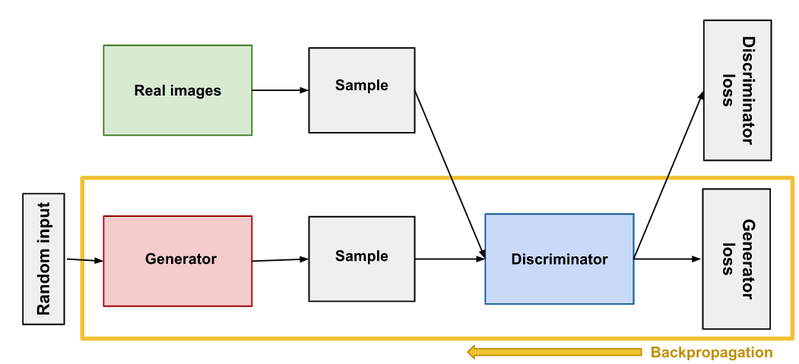
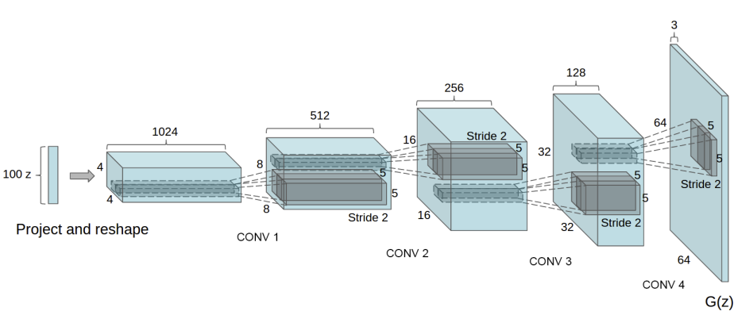

DCGAN¶
Architecture¶

Weight Init¶
- If conv Random Normal with mean = 0 and std.dev = 0.02
- If BatchNorm with mean = 1.0 and std.dev = 0.02, Bias = 0
Generator¶
- Map latent space vector z to data space
- Creating RGB with same size as training image
- Transposed Conv , Batch Normalization and Relu
- Output is 3x64x64
- Output passed through Tanh to return it to [-1,1]
- Batch Normalization AFTER Transposed Conv is super important as it helps with flow of gradients
- Notice, how the inputs we set in the input section (nz, ngf, and nc) influence the generator architecture in code. nz is the length of the z input vector, ngf relates to the size of the feature maps that are propagated through the generator, and nc is the number of channels in the output image (set to 3 for RGB images)

Discriminator¶
- Strided Conv, Batch Normalization, and Leaky Relu
- 3x64x64 input
- Binary classification network - outputs prob of real/fake
- Final is a Sigmoid layer
- For downsampling, good Practise to use Strided rather than Pooling as it lets the network learn it's own pooling function
- Almost a direct inverse of the Generator
Special Features¶
- Explicitly uses convolutional layers in the discriminator and transposed-convolutional layers in the generator
- Further the discriminator uses batch norm layers and Leaky Relu activations while the generator uses Relu activations
- The input is a latent vector drawn from a standard normal distribution and the output is a \(3 \times 32 \times 32\) RGB image
- In this implementation, I also added in Label Smoothing
Loss functions¶
Discriminator loss¶
The Discriminator penalizes wrongly classifying a real image as a fake or a fake image as real. This can be thought of as maximizing the following function. \(\(\nabla_{\theta_{d}} \frac{1}{m} \Sigma_{i=1}^{m}[log D(x^{(i)}) + log(1-D(G(z^{(i)})))]\)\)
Generator loss¶
-
The Generator loss takes the output of the Discriminator into account and rewards it if the Generator is fooled into thinking the fake image is real. If this condition is not satisfied, the Generator is penalized.
-
This can be thought of as minimizing the following function. \(\(\nabla_{\theta_{g}} \frac{1}{m} \Sigma_{i=1}^{m}log(1-D(G(z^{(i)})))\)\)